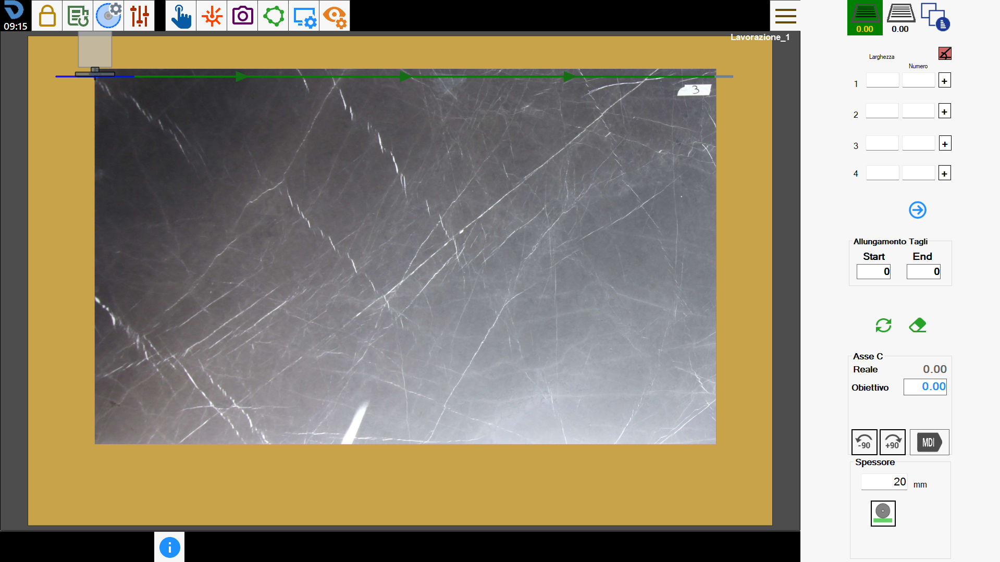
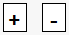
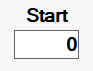
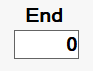
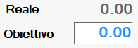
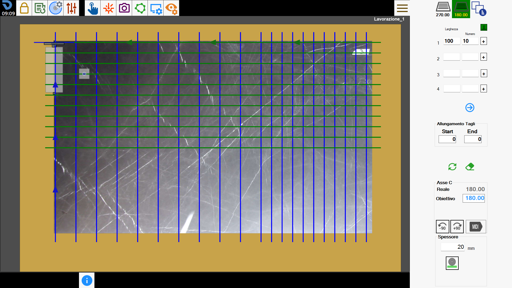

With this functionality it is possible to add the multiple cut.
This particular type of cuts allows to create a series of parallel cuts among themselves in the same group, with the possibility to have two groups each with its direction set.
The interface appears similar to the following:

Side bar
Selection and management of cut groups
 | Create first group of cuts |
| Create second group of cuts |
 | Cut Management |
Cutting parameters
For each of the two groups of cuts available to the operator it is possible to insert up to 100 simultaneous cut configurations, with their respective parameters.
 | Orthogonal directions |
Width | The distance between a cut and another. |
Numbers | The quantity of parallel cuts to create. |
 | Location cuts |
 | Show next/previous cuts |
Stretching cuts
The operator has the possibility to extend all cuts present in the first and second group at the beginning or at the end of the set measure.
 | Start |
 | End |
Delete and updates cuts
 | Delete cuts |
 | Updates cuts |
Axis C
It is possible to rotate the head of the machine in order to adjust the orientation of the cuts of both the first and second group.
 | Rotate _90 |
 | Rotate -90 |
 | Machine head rotation |
MDI |
Thickness
The operator can go to define thickness of the slab that will be cut.
 | Manual thickness |
Thickness with machine |
Execution of working
The operator has the possibility to set both groups of cuts modifying their relative parameters.
Once the desired result is obtained, the 'Start cycle' button can be pressed to execute the working.
First group cut
In the first group of cuts will be defined one or more groups of cuts modifying the parameters Width, Number and Position Cuts, also the rotation of the C axis.
In the following working there have been set parallel cut with respect to the current position of the machine.

Second group cuts
Similarly to the first group of cuts, also for the second it is possible to change the parameters to obtain the researched result.
In this working the direction of the cuts was modified, executing some cuts orthogonal to those of the first group.

Optimization and cut management
In this section we can go to modify the execution order of the cuts with the possibility of choosing whether or not to execute a cut.